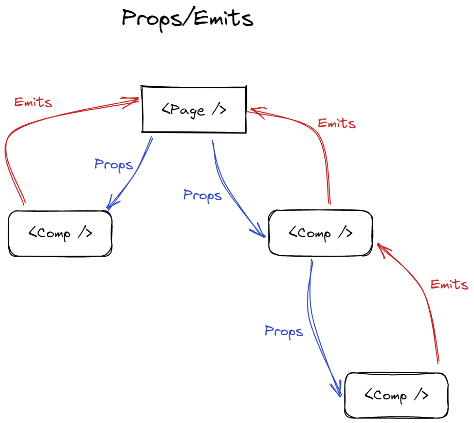

The secret to building large apps is never build large apps. Break your application into small pieces. Then, assemble those testable, bite-sized pieces into your big application.
Компоненти - це блоки, які дозволяють нам розділити інтерфейс користувача (UI) на незалежні частини, які можна багаторазово використовувати, і думати про кожну частину окремо. Це ізольована частина системи, яка приймає дані, генерує події (events), володіє html, css + має якусь js логіку.
Props — це механізм для передачі даних від батьківського компонента до дочірнього компонента. Коли ви визначаєте властивість у дочірньому компоненті, ви можете використовувати її так само, як і будь-яку іншу властивість даних у компоненті.
Всі props формують односторонню зв’язку між дочірньою та батьківською властивостями (props): коли батьківська властивість оновлюється, вона переходить до дочірньої, але не навпаки.
Щоразу, коли батьківський компонент оновлюється, усі атрибути в дочірньому компоненті оновлюватимуться останнім значенням. Це означає, що не слід намагатися змінити реквізит всередині дочірнього компонента.
Emit — метод, який дозволяє дочірнім компонентам спілкуватися з батьківськими компонентами, генеруючи події. Коли подія надходить від дочірнього компонента, вона може бути зафіксована батьківським компонентом за допомогою директиви v-on(@).
Emit у Vue.js — це спосіб для дочірніх компонентів спілкуватися з батьківськими компонентами шляхом випромінювання подій.
Це забезпечує кращий склад компонентів і полегшує створення багаторазових компонентів, які можна використовувати в різних контекстах.
props/emits - дочірній компонент не повинен змінювати (мутувати) props безпосередньо, він повинен повідомляти батьківський компонент, що такий-то props слід змінити на таке значення. Повідомляє він про це, використовуючи emit(). Так, «props drilling» тут присутній, але таку вкладеність можна проігнорувати.
Watch — це функція, яка дозволяє спостерігати за змінами властивості даних і реагувати на ці зміни. Коли властивість даних, за якою спостерігають, змінюється, виконується функція зворотного виклику (callback function).
Спостерігач watch корисний для обробки побічних ефектів, виконання перевірки даних або обчислень, а також ініціювання дій на основі змін у даних.
WatchEffect — це новий API, який дозволяє створювати реактивний ефект, який автоматично відстежує залежності коду всередині наданої вами функції. Кожного разу, коли будь-яка реактивна залежність функції змінюється, ефект автоматично запускається повторно
На відміну від watch, який вимагає від вас вказати певну властивість для перегляду, watchEffect динамічно відстежує всі реактивні залежності, що використовуються у функції зворотного виклику, що може спростити ваш код.